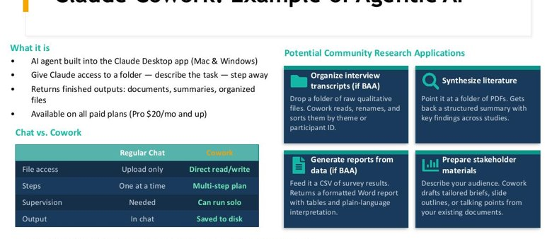

What makes something an "agent," how to steer it with context, how it connects to tools, and how to keep it reliable.
"An agent is an LLM that can use tools in a loop until it completes a task." — the working definition we'll use all day.
Each turn: the model picks an action, the action runs in an environment (a sandbox), the result is appended to context, and the loop continues.
Write, run, and debug code; build apps; analyze data programmatically.
Search the web, synthesize many sources, produce cited reports.
Create documents, manage files, run multi-step office tasks.
Control mouse/keyboard, navigate apps and websites like a person.
The boundaries blur — most capable tools now do several of these.
As work moves from one-shot chats to agents running over many turns, the question changes from "what do I say?" to "what configuration of context makes the right behavior likely?"
Writing one good instruction — wording and phrasing for a single response.
Curating the full set of tokens the model sees over time: instructions + tools + retrieved data + history + memory.
Context is a finite resource — every token competes for the model's attention.
Role, rules, output format, boundaries.
What actions are available and how to call them.
Relevant files, documents, prior analyses (RAG).
Earlier turns; durable notes that persist across steps.
The actual request, with examples and constraints.
Compact, summarize, and prune — long context degrades and costs more.
Managing this state well is most of what separates a flaky demo from a reliable agent.
Betting on context engineering (not fine-tuning a custom model) let the team ship in hours, not weeks — and stay "the boat on the rising tide," improving as models improve.
They rebuilt their agent framework four times. Cost & latency hinge on keeping the context stable (cache-friendly). Expect iteration, not a clean recipe.
Practical takeaway: keep instructions stable, append rather than rewrite, and design context for reuse.

Tools let a text model do what it otherwise can't: browse the web, run code, query a database, call an API, read your files.
This is the "act" step of the agent loop — and the reason agents can affect the real world.
You've used this already: the connectors in tools like Cowork are MCP servers.
A request flows model → client → server → tool, and the result flows back along the same chain.
Examples: query a database, search files, call a web API, read a spreadsheet — all through one standard interface.
A Skill is a reusable folder of expertise. If MCP is how an agent reaches tools, a Skill is how it knows your way of doing a task.
SKILL.md — name + description + instructionsscripts/ — code it can run (optional)references/ — docs loaded on demandBuild one fast with the Skill Creator (built into Claude Desktop & Cowork). Public-health ideas: a de-identification checklist, a plain-language rewriter, a grant Specific-Aims formatter.
A "loop" is a reusable instruction that tells an agent what to do, how to check its work, and when to stop — turning a one-off prompt into a dependable routine.
Review the codebase, update stale docs, verify, open a pull request.
Stop: docs match the code.
Refactor, live-test, auto-review, and commit after each step.
Stop: architecture is satisfactory & checks pass.
Keep optimizing and re-measuring under the same test.
Stop: page loads under 50 ms.
Every good loop names an explicit VERIFY / STOP condition — otherwise an agent runs forever or stops too early.
| Tool | Surface | Coding needed? | Best for |
|---|---|---|---|
| Claude Cowork | Desktop app | No | Files, documents, research — for non-developers |
| Claude Code | Terminal | Terminal | Reasoning-heavy, multi-file coding & analysis |
| Codex CLI (OpenAI) | Terminal / editor / cloud | Terminal | Fast coding agent; tops coding benchmarks |
| Gemini CLI | Terminal | Terminal | Free, accessible, very large context |
| Cursor | Code editor | Editor | Agent mode inside an AI-native editor |
Also free/open: OpenCode, Cline, Goose, Aider. Specific rankings shift monthly — pick by surface and workflow, not the leaderboard.
The same idea — a model plus tools running in a loop — ships in different surfaces and autonomy levels (recall the three ways to work with AI from Day 1).
| Harness | What it is | Best for |
|---|---|---|
| Claude Code | Terminal agent (Anthropic) | Coding, data, file automation in a repo |
| Cowork | Desktop agent (Anthropic) | Non-coders: files, connectors, Skills, scheduled tasks |
| Codex | Terminal agent (OpenAI) | Long, “walk-away” autonomous runs |
| Antigravity | Agent-first IDE + CLI (Google) | Orchestrating multiple agents; browser-tested builds |
| OpenCoworker | Open-source desktop agent | Privacy-sensitive work; bring-your-own / local model |
Choose on: surface (terminal / desktop / IDE), autonomy, model lock-in, and data control. For sensitive health data, weight model choice and local execution heavily.
An agent that shines in a demo can fail "in the wild." Reliability needs real evaluation, not impressions.
Work out the correct answers by hand, then compare the agent's output to them.
Use a model to grade outputs at scale — calibrated against your ground truth.
Run many cases; track where and how it fails, not just whether one demo worked.
Especially important when wrong answers have real consequences — health guidance, resource allocation, policy.
Approve consequential or irreversible actions.
Give only the access the task needs; sandbox execution.
Check facts, code, and numbers before acting on them.
Keep protected health data out of tools that aren't approved for it.
Agents act in the world — so the stakes of a mistake are higher than with a chatbot. Scope and supervise accordingly.
Agents can generate far faster than you can check. As output gets cheaper, your verification becomes the limiting step — and the real skill.
Using AI to pressure-test your own thinking is one of its most reliable uses — and it keeps you in the loop.
Sweep the literature on a hazard, synthesize, and draft a cited brief — then you verify.
Clean a dataset, run the analysis, generate figures and reproducible code.
Cut administrative time — e.g., Nesta's agents helping low-carbon-tech installers.
Same rules apply: define a clear loop with a stop condition, evaluate it, and keep a human on consequential decisions.
Build a reusable system prompt / project context for a recurring task.
Watch an agent read files, run code, and produce a deliverable.
Draft a repeatable loop with an explicit VERIFY / STOP condition.
Wire up a tool/MCP connector in a no-code or low-code builder.